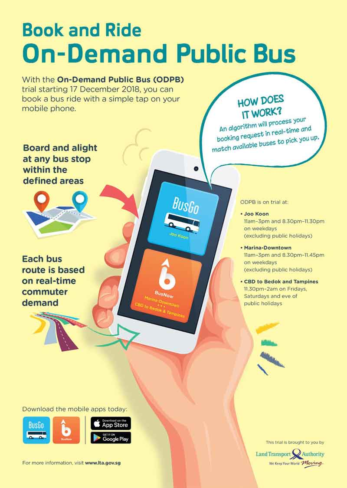

Smart Nation is a Singapore Government initiative to harness infocomm technologies, IT works and big data to create tech-enabled solutions.
Overview
Recognition
Smat Nation Initiatives
Minister Lee Hsien Loong on 24 November 2014. Minister-in-charge Vivian Balakrishnan believes that the various platforms will empower citizens, enabling them to make use of the information available and come up with their own solutions, instead of relying on the government for problem-solving.
The government plans to dedicate $2.4 billion to working with the private sector in financial year 2017. It will support technology startups by doing business with them instead of grants to spur innovation.
To encourage innovation and collaboration between citizens and companies, open data is made available at government portals such as Data.gov.sg and Datamall.
Some areas of focus include enhancing public transport networks, enabling successful ageing and ensuring a secure but open data marketplace. The Smart Nation Sensor Platform (SNSP) tracks and analyses data related to housing, amenities and public infrastructure. Former civil servant Peter Ong explained that this encompasses hardware like lamp-posts and public cameras, as well as software that enables sensor data exchange and data and video analytics. A interconnected network of 110,000 lamp posts with wireless sensors will collate data that will be used for urban and operational planning, maintenance and incident response.
The Smart Nation and Digital Government Group (SNDGO) and Government Technology Agency (GovTech) under the Prime Minister's Office (PMO) lead the development of a National Digital Identity framework for online transactions between citizens and businesses, building on the current SingPass system.
Singapore emerged top in the 2017 Global Smart City Performance Index by Juniper Research and Intel. The ranking is based on the integration of Internet of Things (IoT) technologies and connected services, and which the nation came out tops in all four of the key areas measured - mobility, healthcare, public safety and productivity.
The rapid urbanisation and increasing urban density that Singapore had experienced over the past few decades gave rise to increasingly complex and intertwined policy issues, such as overcrowding, strains to public infrastructure, and high costs of housing, among others. these emerging urban policy issues also resulted more recently in public discontent, as was evident in the decline in vote-share for the ruling People's Action Party in the 2011 General Elections. Yet at the same time, Singapore shifts to a knowledge-based economy stimulated much interest in the economic possibilities associated with digitisation and big data.
The Smart Nation Initiative covers these aspects of Singaporean life:
Urban Living
Transport

Health and enabled aging
Health and enabled aging
Digital Government Service
Startups and Businesses